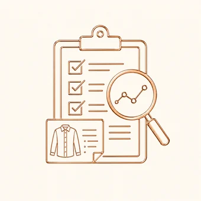
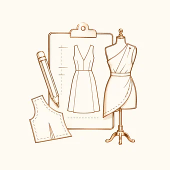
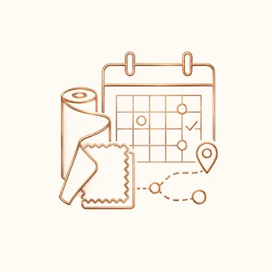
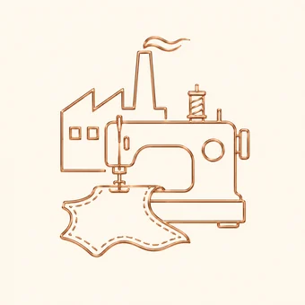
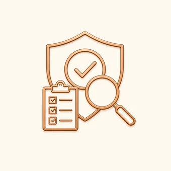
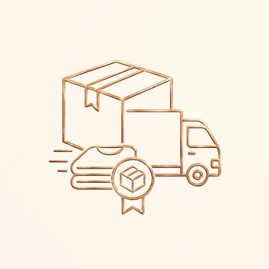
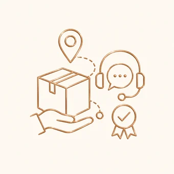

01Requirement Analysis
We review the buyer’s product brief, target price, quantity, fabric needs, quality expectations, and timeline.
Sourcing process
Every stage is designed to improve communication, reduce risk, and keep production aligned with buyer expectations.

01We review the buyer’s product brief, target price, quantity, fabric needs, quality expectations, and timeline.

02We support sketches, tech packs, samples, measurements, trims, and development communication.

03We coordinate fabric, trims, accessories, suitable factory selection, costing, and production planning.

04We follow up with factory partners to support order execution, timeline control, and production visibility.

05We support inspection checkpoints to help identify issues early and maintain product consistency.

06We assist with packing instructions, carton preparation, shipment documents, and logistics coordination.

07We support final delivery follow-up, buyer communication, and post-shipment coordination.